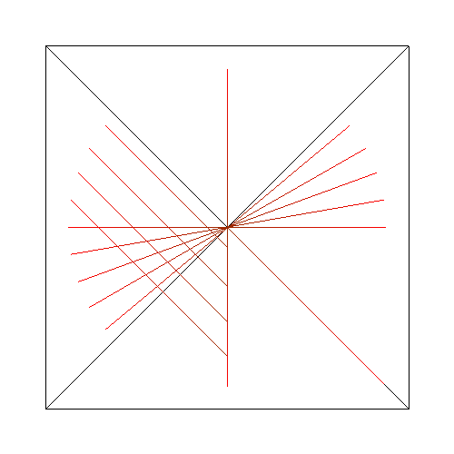

Simple proof tests of the Bresenham Line Algorithm
Tristan Brumagin
CSCI 330 - HW #2
Problems Encountered
The vast majority of the problem in this assignment was in the mathematics, and then translating the results to code.
After that, it became a canvas issue, since I performed the math assuming the origin to be (x1, y1), when the origin is in the top-left corner of the canvas.
The ability to quickly and easily reference previous qork on the Bresenham algorithm was incredibly important. Even flipping through pages took too long, and the use of a white board became neccessary to keep track of the work done.
Interesting Techniques Employed
I ended up with a lot of 45 degree and straight lines while trying to get the Bresenham implemented lines to work.
These problems became much easier to solve by logging the A and B values into the console and following the algorithms by hand.
This is how I discovered that I had performed the math assuming the graphing usues mentioned above.
My implementation of Bresenham doesn't do anything special or interesting.
Sources of Information
While websites were referenced for this project, none were especially helpful.
There are one hundred and one different derivations for the first octant, but information beyiond that proved scarce.
www.cs.helsinki.fi/group/goa/mallinnus/lines/bresenh.html was probably the biggest source of help, and it was mostly a push to derive the full thing myself.
Special thanks to w3schools.com for informatino on html.
Collaborators
The three whiteboards in the common area.
Notes on Additions
No additions were added to this program.
Screenshots of Interesting Results
Initially, attempts to implement Bresenham's lead to some roundabout ways of imlpementing horizontal, vertical, and diagonal lines.

I screwed up my percentages in the original implementation of linear color interpolation.
The below graphic is supposed to transition from red to orange.
Derivation of Bresenham's Line Algorithm
While the included images do not include the full derivation for Bresenham's, I was able to interpet the patterns between the octants 1 and 8 (the X Major, x1 < x2) octants in order to extrapolate the patterns between octants 2 and 7 (Y major, y1 < y2).
Again, problems arose since these assume (x1, y1) at origin, ignoring the orientation of the html5 canvas. The remaining four octants simply exchanged (x1, y1) and (x2, y2) values in order to ensure the algorithm would always draw within these four 'proofed' octants.